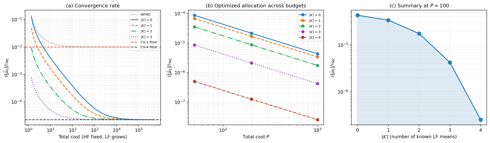
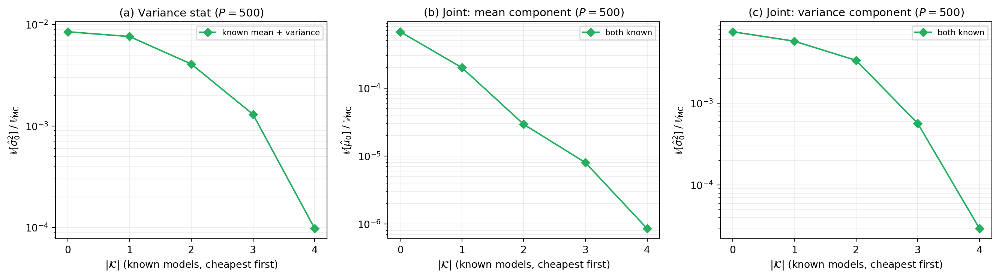
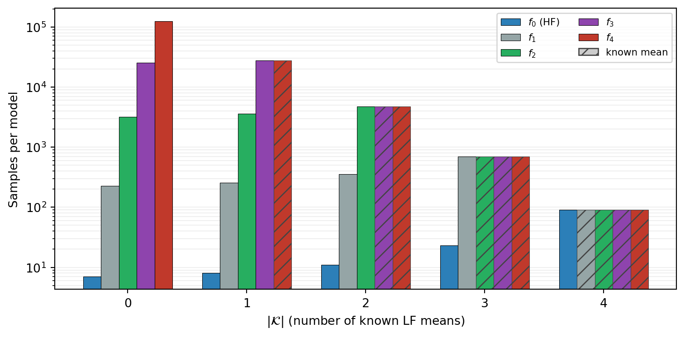

Group ACV: Mixed Known Statistics
PyApprox Tutorial Library
When some low-fidelity models have analytic moments and others do not. Each known statistic relaxes a constraint, strictly enlarging the feasible weight set and strictly reducing the minimum variance. The framework interpolates between full CVMC and full ACV along the known-stats axis.
TipDownload Notebook
Learning Objectives
After completing this tutorial, you will be able to:
- Identify situations where some low-fidelity model statistics are known analytically and others must be estimated — and recognize that such configurations are common in practice
- Explain why each known statistic strictly reduces the optimal group ACV variance, using the constraint-relaxation argument
- Locate where on the CVMC-to-ACV spectrum a given problem falls based on how many model moments are known
- Use the PyApprox
known_quantitiesAPI to specify which model moments are known and to which models the constraint relaxation applies - Recognize the structural effect of known statistics on both the asymptotic variance ceiling and the optimized-allocation variance at any budget
Prerequisites
Complete Group ACV Concept and Control Variate Concept. The first establishes the framework this tutorial extends; the second covers the all-known endpoint of the spectrum we will explore.
Two Endpoints, One Spectrum
Two estimators from the earlier tutorials sit at opposite ends of a single axis:
Control variate Monte Carlo (CVMC). All low-fidelity moments are known analytically. The estimator combines high-fidelity samples with the known values to deliver variance \(\sigma_0^2(1 - \rho^2)/N\) — exact use of every correlation, no budget spent estimating LF moments.
Approximate control variate (ACV) / group ACV. No moments are known. Every model is sampled, every moment estimated, with the budget spent across models to maximize variance reduction within the unbiasedness constraint.
CVMC works only when the LF model is something whose mean is analytically known — a polynomial chaos expansion, a Gaussian process posterior, an analytic approximation, or a model with a known closed-form expectation. ACV / group ACV works on any pair of correlated models, regardless of moment knowledge — but pays a budget cost to estimate moments that CVMC would have used for free.
Most real problems sit between these endpoints. A practitioner has an ensemble of LF models: some are surrogates whose means are analytically tractable (by construction), others are coarser FEM discretizations whose means require sampling. Forcing the problem into “all known” or “all unknown” frameworks throws away available information. The mixed-known extension of group ACV addresses this.
When Are Some LF Moments Actually Known?
Several common settings in scientific computing produce LF models with analytic moments:
Polynomial chaos expansions and other spectral surrogates. When the LF model is constructed as \(\sum_j c_j \Phi_j(\boldsymbol{\theta})\) with basis functions \(\Phi_j\) orthonormal under the input distribution, the mean is \(c_0\) and the variance is \(\sum_{j \geq 1} c_j^2\). Both are read off from the coefficients at zero cost.
Function train surrogates. Like PCE, a function train decomposition in an orthonormal basis yields moments directly from its coefficients. The low-rank tensor format makes this practical even in high dimensions.
Gaussian process surrogates. GP posterior means and variances at any input admit closed forms; the integral against the input distribution can often be computed analytically when the kernel and input distribution have compatible structure (e.g., RBF kernel with Gaussian input).
Analytic baseline models. Some LF models are themselves analytic approximations whose moments are tractable by design — perturbation expansions, linearizations, mean-field reductions.
In each of these cases, the LF model has a known moment that the framework should exploit but conventional ACV ignores. The mixed-known extension does the right thing.
Constraint Relaxation: The Mechanism
Recall from Group ACV Concept that the unbiasedness constraint is \[ R\, \boldsymbol{\beta} = \mathbf{e}^0, \tag{1}\] where row \(\ell\) of \(R\) sums the per-group weights for model \(\ell\) and the right-hand side \(\mathbf{e}^0 = (1, 0, \ldots, 0)^\top\) forces those sums to \(1\) for model 0 and \(0\) for every LF model.
The row for model \(\ell\) is what makes \(\hat{Q}_{\text{GACV}}\) unbiased for \(\mu_0\) regardless of the unknown value of \(\mu_\ell\). If a non-zero coefficient on \(\mu_\ell\) slipped in, it would bias the estimator by an unknown amount.
But if \(\mu_\ell\) is known, the argument no longer applies. A non-zero coefficient \(s_\ell\) on \(\mu_\ell\) contributes a known, constant bias term that can be subtracted off after the fact: \[ \hat{Q}_{\text{GACV-mixed}} = \sum_{k=1}^K (\boldsymbol{\beta}^k)^{\!\top} \hat{\mathbf{Q}}^k \;-\; \sum_{\ell \in \mathcal{K}} s_\ell\, \mu_\ell, \tag{2}\] where \(\mathcal{K} \subseteq \{1, \ldots, M\}\) is the set of LF models with known mean. The optimizer is then free to choose \(s_\ell\) to whatever value reduces variance most, instead of being pinned to zero.
Equivalently, the rows of \(R\) indexed by \(\mathcal{K}\) are removed from the constraint Equation 1. The constraint matrix \(R\) goes from \((M+1) \times P\) to \((M+1 - |\mathcal{K}|) \times P\) rows, and the feasible weight set strictly enlarges.
The optimal-weight formula from Group ACV Concept applies with the smaller \(R\): \[ \boldsymbol{\beta}^\star = C^{-1} \tilde{R}^{\!\top} (\tilde{R}\, C^{-1} \tilde{R}^{\!\top})^{-1} \mathbf{e}^0_{\text{red}}, \] where \(\tilde{R}\) is the restriction matrix with rows for known-moment models removed and \(\mathbf{e}^0_{\text{red}}\) is the unique non-trivial entry. The deterministic correction \(-\sum_{\ell \in \mathcal{K}} s_\ell \mu_\ell\) enters at evaluation time.
Why removing rows strictly helps
The variance formula from Group ACV Concept is the optimum of a constrained quadratic. Removing a constraint row enlarges the feasible set: every weight that satisfied the original \(R\) still satisfies \(\tilde{R}\), plus many more that did not. The optimum over a larger feasible set can only equal or improve the optimum over the smaller set.
It strictly improves whenever the removed constraint was active — that is, whenever the original optimum’s weight vector had \(s_\ell \neq 0\) for model \(\ell\) being relaxed. For typical problems this is the case for every LF model, so every known statistic gives a strict variance improvement.
Known Variances and Joint Mean+Variance
The same constraint-relaxation argument applies when variances are known. If \(\sigma_\ell^2\) is known for some LF model \(\ell\), the unbiasedness constraint for \(\sigma_0^2\) relaxes by one row.
For joint mean+variance estimation (see Group ACV Multi-Statistic Concept), the constraint matrix has two rows per model: one for \(\mu_\ell\) and one for \(\sigma_\ell^2\). Each known moment removes one row. If the LF model has both mean and variance known — which is typical for the practical sources listed above — both rows are removed.
NoteKnown variance requires known mean
A model with known variance must also have known mean — variance estimation depends on the mean, so the MeanGuidedSubsetFitter enforces this constraint. For joint mean+variance estimation, this naturally becomes the per-model all-or-nothing rule: a model is either fully known (both moments) or fully unknown (neither). This reflects the common case — analytic surrogates and GP posteriors give both moments together.
Two valid configurations for a given model:
- Known mean only — helps screening identify active partitions
- Known mean + variance — additionally eliminates variance estimation error
What This Looks Like Numerically
The full structural and practical story shows up across three views of the same phenomenon on the polynomial five-model benchmark. The covariance matrix \(\boldsymbol{\Sigma}\) is computed via exact Gauss quadrature on the known polynomial model functions. The figure below carries the three views as three panels.
The three panels of Figure 1 tell related stories that together support the design choice of supporting mixed known statistics in the framework:
Panel (a), convergence rate. This is the same kind of plot as the convergence plot from Group ACV Concept, but with one new variable: how many LF moments are known. The estimator uses GACV-IS with the five SAOB subsets \(\{0{-}4\}, \{1{-}4\}, \{2{-}4\}, \{3,4\}, \{4\}\) — the same subsets as that earlier figure (MLBLUE in general uses all \(2^M - 1\) subsets; the SAOB choice keeps the sweep comparable to the MFMC reference). Known means are added cheapest-first: \(|\mathcal{K}| = 1\) knows \(\mu_4\), \(|\mathcal{K}| = 2\) knows \(\mu_4, \mu_3\), and so on up to \(|\mathcal{K}| = 3\) knowing \(\mu_4, \mu_3, \mu_2\). The case \(|\mathcal{K}| = M = 4\) is not plotted: when every LF mean is known, all LF partitions are pinned to \(N_0\) and the estimator variance equals the CV-\(M\) floor at every sample count — the curve would simply lie on the floor line. For \(|\mathcal{K}| < M\), all curves converge to the same CV-\(M\) floor — that limit depends only on population correlations, not on whether moments are known. The practical difference is how fast they get there. With more moments known, the constraint relaxation gives the optimizer better weights at every finite LF sample count, so the curve descends to the floor sooner. Partitions that serve only known-mean models stay at \(N_0\) (no point sampling a model whose mean is already known), freeing budget for the remaining unknown-mean models.
Panel (b), optimized allocation across budgets. This is the practical view: variance ratio vs total cost \(P\), with sample-allocation optimization over all \(2^M - 1\) subsets, one curve per \(|\mathcal{K}|\). Known means are added in the same order as panel (a). At every budget, more known means yield lower variance. The curves fan apart as \(P\) grows: at small budgets the improvement from known means is modest; at large budgets the gap widens because the optimizer can better exploit the relaxed constraints when it has more budget to redistribute.
Panel (c), variance vs \(|\mathcal{K}|\) summary. At fixed budget, sweeping \(|\mathcal{K}|\) from \(0\) to \(M\) produces a monotonically decreasing curve — exactly what the constraint-relaxation argument predicts. The curve’s shape (steep initial drops then diminishing returns, or roughly linear) depends on the relative correlations of the models being added. For this benchmark, the strongly-correlated models contribute the largest initial improvements; the weakly-correlated models add smaller increments.
The figure makes two practical points concrete. First: the value of a known moment is not asymptotic-only. At every realistic budget, known moments deliver a real and quantifiable variance reduction. Second: known moments compound. A practitioner with two surrogates of known mean does not need to choose which one to exploit — the framework uses both, and the gain from using both exceeds the gain from either alone.
Known Statistics for Variance and Joint Estimation
The previous sections showed known means improving the mean estimator. The same mechanism extends to variance and joint mean+variance estimation via the MeanGuidedSubsetFitter, which uses a cheap Mean-stat solve (Stage 1) to screen partitions, then optimizes the target stat (Stage 2) on the reduced problem.
The figure below sweeps the number of models with known statistics \(|\mathcal{K}| = 0, \ldots, 4\) (cheapest models first) on the 5-model polynomial benchmark at budget \(P = 500\).

Key observations:
Orders of magnitude reduction for the variance stat — Panel (a) shows that each additional model with known mean + variance yields dramatic improvement in estimator variance.
Joint estimation benefits equally — Panels (b) and (c) show that providing both mean and variance for each known model yields dramatic reduction in both the mean and variance components of the joint estimator.
Cheapest-first ordering is optimal for maximizing benefit per additional known model, since cheap models receive the most samples and thus contribute the most estimation error.
API Usage
The known_quantities parameter on GroupACVEstimatorIS, GroupACVEstimatorNested, and MLBLUEEstimator (mean only) takes a dict that maps (model_index, stat_name) pairs to the known value array:
from pyapprox.statest.groupacv import GroupACVEstimatorIS
from pyapprox.statest.groupacv.allocation import GroupACVAllocationOptimizer
from pyapprox.statest.groupacv.utils import get_model_subsets
from pyapprox.statest.statistics import MultiOutputMean
# Assume bench is a PolynomialEnsembleBenchmark with nmodels=5
stat = MultiOutputMean(bench.problem().models()[0].nqoi(), bkd)
stat.set_pilot_quantities(bench.ensemble_covariance())
# Known means for models 1 and 3 (analytic surrogate, GP posterior)
means = bench.ensemble_means() # shape (nmodels, nqoi)
known_quantities = {
(1, "mean"): means[1, :], # shape (nqoi,)
(3, "mean"): means[3, :],
}
est = GroupACVEstimatorIS(
stat,
bench.problem().costs(),
model_subsets=get_model_subsets(5, bkd),
known_quantities=known_quantities,
)
result = GroupACVAllocationOptimizer(est).optimize(target_cost=100.0)For mean+variance estimation, both keys per model are required:
means = bench.ensemble_means() # shape (nmodels, nqoi)
cov = bench.ensemble_covariance() # shape (nmodels, nmodels)
variances = bkd.diag(cov) # shape (nmodels,)
known_quantities = {
(1, "mean"): means[1, :], # per-model all-or-nothing
(1, "variance"): variances[1:2],
(3, "mean"): means[3, :],
(3, "variance"): variances[3:4],
}For variance-only estimation with MultiOutputVariance, only the variance keys are accepted; mean keys are rejected with an explanatory error.
What the Optimizer Does With Known Moments
The samples-per-model allocation problem is solved over the relaxed feasible set. The allocation changes qualitatively as known moments are added.
On the polynomial five-model benchmark at \(P = 100\), the optimizer selects the following allocations (all \(2^M - 1 = 31\) subsets are candidates):
| \(|\mathcal{K}|\) | Known models | Active partitions |
|---|---|---|
| 0 | — | 5: \(\{4\}, \{3,4\}, \{2{-}4\}, \{1{-}4\}, \{0{-}4\}\) |
| 1 | \(f_4\) | 4: \(\{3,4\}, \{2{-}4\}, \{1{-}4\}, \{0{-}4\}\) |
| 2 | \(f_4, f_3\) | 3: \(\{2{-}4\}, \{1{-}4\}, \{0{-}4\}\) |
| 3 | \(f_4, f_3, f_2\) | 2: \(\{1{-}4\}, \{0{-}4\}\) |
| 4 | \(f_4, f_3, f_2, f_1\) | 1: \(\{0{-}4\}\) |

Figure 3 and Table 1 together reveal consistent trends when known means are added cheapest-first (\(f_4, f_3, f_2, f_1\)):
One partition drops per known mean. With no known means, the optimizer uses the five SAOB subsets. Each new known mean eliminates exactly the partition whose models are all now known: \(\{4\}\) drops when \(f_4\) is known, \(\{3,4\}\) drops when \(f_3\) is also known, and so on. At \(|\mathcal{K}| = 4\), a single full-ensemble partition remains — recovering CVMC.
Known-mean models equalize. Once a model’s mean is known, its sample count drops to match the cheapest remaining unknown model. The optimizer no longer needs to estimate the known mean, so there is no reason to over-sample the known model relative to other models in the same partition.
HF samples consistently increase. Budget freed by the relaxed constraints flows toward \(f_0\): from 7 samples at \(|\mathcal{K}| = 0\) to 90 at \(|\mathcal{K}| = 4\), a \(13\times\) increase in HF resolution for the same total cost.
Key Takeaways
- Each known LF statistic relaxes one row of the unbiasedness constraint matrix \(R\), strictly enlarging the feasible weight set and strictly reducing minimum variance
- Common sources of known LF moments — PCE surrogates, function train surrogates, GP posteriors, analytic baselines — make mixed configurations practical, not edge cases
- Known moments improve the convergence rate to the CV-\(M\) floor (see Figure 1 panel a) and the optimized-allocation variance at any finite budget (see Figure 1 panel b)
- The
known_quantitiesAPI takes a dict mapping(model_index, stat_name)to the known value array - Known variance requires known mean — the fitter enforces this. For joint mean+variance estimation, this becomes the per-model all-or-nothing rule
- The framework interpolates smoothly between full ACV (\(|\mathcal{K}| = 0\), no moments known) and full CVMC (\(|\mathcal{K}| = M\), all moments known)
Exercises
Using Figure 1 panel (c), estimate the variance ratio between \(|\mathcal{K}| = 0\) and \(|\mathcal{K}| = 4\) at \(P = 100\). How much total variance reduction is available from exploiting all four LF means?
Consider a problem where one LF model has a known mean (a PCE surrogate) and three other LF models are FEM discretizations with unknown means. Sketch the structure of \(\tilde{R}\) (the restriction matrix with the known row removed). How many constraint rows does the optimization have?
The constraint relaxation argument says known moments strictly reduce variance whenever the corresponding constraint was active. Construct a case where a known moment provides no improvement — i.e., the original optimal weights already had \(s_\ell = 0\) for the relaxed model. (Hint: think about a model that is uncorrelated with all others.)
Suppose your problem has \(M = 4\) LF models, two with known means (\(\mathcal{K}_\mu = \{1, 3\}\)) and one with known variance (\(\mathcal{K}_\sigma = \{2\}\)). For joint mean+variance estimation under the per-model all-or-nothing rule, is this configuration valid? Explain what the user would need to change to make it valid.
(Challenge) All curves in Figure 1 panel (a) converge to the same CV-\(M\) floor. Express this floor as a function of \(\sigma_0^2\) and the population covariance matrix. Why does it not depend on \(|\mathcal{K}|\)?
Next Steps
- Pilot Studies Concept — How known moments reduce the size of the pilot study needed for the remaining unknown moments
- Group ACV Multi-Statistic Concept — Companion tutorial on variance and mean+variance estimation, on which the mixed-known extension builds for non-mean statistics
- Ensemble Selection Concept — Choosing which LF models to include in the first place, with attention to which ones have known moments
- API Cookbook — Runnable examples of
known_quantitiesAPI usage for all three statistic configurations
Tip
Ready to try this? See API Cookbook → Mixed Known Statistics for end-to-end examples using known_quantities with GroupACVEstimatorIS, GroupACVEstimatorNested, and MLBLUEEstimator.
References
[GJE2024] A. Gorodetsky, J. Jakeman, M. Eldred. Grouped approximate control variate estimators. arXiv:2402.14736, 2024. DOI
[PWGSIAM2016] B. Peherstorfer, K. Willcox, M. Gunzburger. Optimal Model Management for Multifidelity Monte Carlo Estimation. SIAM J. Sci. Comput. 38(5):A3163–A3194, 2016. DOI
[GTW2014] M. B. Giles. Multilevel Monte Carlo methods. Acta Numerica, 24:259–328, 2015. DOI